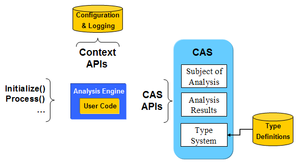

The UIMA C++ framework is designed to facilitate the creation of UIMA compliant Analysis Engines (AE) from analytics written in C++, or written in languages that can utilize C++ libraries. The UIMACPP SDK directly supports C++, and indirectly supports Perl, Python and Tcl languages via SWIG (https://www.swig.org/). Existing analytic programs in any of these languages can be wrapped with a UIMACPP annotator and integrated with other UIMA compliant analytics or UIMA-based applications.

Figure 1 - UIMA Framework Core |
Figure 1 illustrates the core functions of the UIMA framework which define a primitive AE: the CAS interface methods used to access the artifact being analyzed and any pre-existing analysis results or other metadata, and to create new analysis results; context APIs used to access configuration and logging; and finally, methods used to provide a standardized interface to a UIMA compliant AE. For Perl, Python and Tcl, SWIG is used to expose the CAS and context methods to user code in each language.
A UIMA C++ AE can be used anywhere a UIMA Java AE can be used, for example, as a delegate in an aggregate AE, or as a UIMA service (using JMS, Vinci or SOAP protocols). When used in the Java framework, by default a C++ AE is instantiated and called via the JNI, running as part of the JVM process. This is also true for Vinci and SOAP services. For JMS services, the UIMACPP SDK includes a native service wrapper compatible with UIMA-AS.
The UIMA C++ framework supports testing and embedding UIMA components into native processes. A UIMA C++ test driver, runAECpp, is available so that UIMA C++ components can be fully developed and tested in the native environment, no use of Java is needed.
UIMA C++ includes APIs to parse component descriptors, instantiate and call analysis engines, so that UIMA C++ compliant AE can be used in native applications. However, UIMA C++ components are primarily intended to be integrated into applications using UIMA's Java-based interfaces.
The UIMA Download Page contains UIMACPP source and 32-bit binary SDK packages for both Linux and Windows platforms. The Linux source package has been used to build and test successfully on MacOSX and on 64-bit Linux platforms.


 Getting Started: Apache UIMA C++ Framework
Getting Started: Apache UIMA C++ Framework